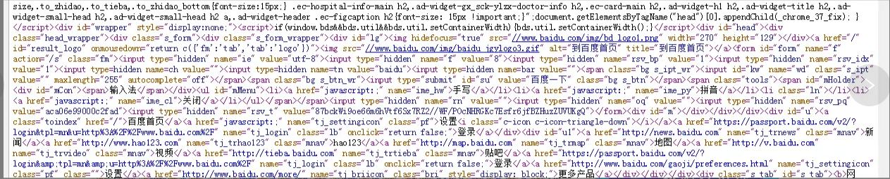

2019-12-02
HTML总结笔记(一)
一、网页的原理：
用户输入某个网址之后，对应的服务器发现用户请求该网页，就会将该网页相关的所有文件（图片文件、JS文件、CSS文件、flash文件等）通过HTTP协议（hypertext transfer protocol超文本传输协议）传输到用户的电脑里面的一个临时文件夹（对应浏览器有自己的临时文件夹位置）中，HTML页面在用户自己的电脑上进行渲染，此时用户即可在浏览器看到对应页面的效果,每一个网址，都对应了服务器上面的确定的文件。
纯文本文件：只有内容，没有样式。常见的纯文本文件有：.txt.html.js.css.java。更深层次可以理解为没有语义，内部所有文字不存在任何代码语义。
二、HTML
HTML：hypertext markup language超文本标记语言。就是通过标签对，给纯文本增加语义。即用文本给文本增加语义，就叫做“超文本”，而存在标签对，所以就是“超文本标记语言”，html中除了语义其他什么都没有。
三、sublime
tips： 做网页和用什么软件没有任何关系，sublime非常快、方便、小巧、插件多。所以我们选择使用这个编辑器
sublime中常用快捷键：
ctrl+n：新建文件 ctrl+滚轮：调整字号 ctrl+shift+↑：上移当前行
ctrl+shift+d：复制当前行 ctrl+shift+k：删除当前行
四、HTML文档基本骨架
1 | <!DOCTYPE html PUBLIC"-//W3C//DTD XHTML 1.0 Transitional//EN""http://www.w3.org/TR/xhtml1/DTD/xhtml1-transitional.dtd"> |
2 | <htmlxmlns="http://www.w3.org/1999/xhtml" xml:lang="en"> |
3 | <head> |
4 | <meta http-equiv="Content-Type"content="text/html;charset=UTF-8"> |
5 | <title>Document</title> |
6 | </head> |
7 | <body> |
8 | </body> |
9 | </html> |
4.1 文档声明头
DocType Declaration：用于声明该文档使用何种规范(HTML/XHTML)
HTML4.01里面有两大种规范，每大种规范里面又各有3种小规范。所以一共6种规范.
sublime输入的html:xt x表示XHTML，t表示transitional
HTML5中极大的简化了DTD，也就是说HTML5中就没有XHTML了（W3C自己打脸了）：
4.2 字符集
字符集用meta标签定义，meta表示“元”。“元”配置，就是表示基本的配置项目。
charset就是charactor set“字符集”的意思。中文能够使用的字符集有两种：
UTF-8和gbk,sublime默认utf-8
注意:我们用meta标签可以声明当前这个html文档的字库，但是一定要和保存的类型一样，否则乱码！
当我们不设置的时候，sublime默认类型就是UTF-8。而一旦更改为gb2312的时候，就一定要记得设置一下sublime的保存类型：文件→ set File Encoding to →Chinese Simplified(GBK)
UTF-8里面存储一个汉字3个字节。而gb2312中存储一个汉字2个字节。
UTF-8 字多，有各种国家的语言，但是保存尺寸大，文件臃肿；
gb2312字少，只用中文和少数外语和符号，但是尺寸小，文件小巧。
浏览器就是通过meta来看你是什么字符集的，比如你保存的时候meta写的，和声明的不匹配，那么浏览器就是乱码。
4.3 关键字和页面描述
只要设置的Description页面面熟，那么百度搜索结果，就能够显示这些语句，这个技术叫做SEO，search engine optimization，搜索引擎优化。
这些关键词，就是告诉搜索引擎，这个网页是干嘛的，能够提高搜索命中率。让别人能够找到你，搜索到你。Keywords就是“关键词”的意思。
4.4 title标签
title也是有助于SEO搜索引擎优化的：
五、HTML的基本语法特性
5.1 html对换行不敏感，对tab不敏感
HTML不是依靠缩进来表示嵌套的，就是看标签的包裹关系。但是，我们发现有良好的缩进，代码更易读。要求大家都正确缩进标签。
